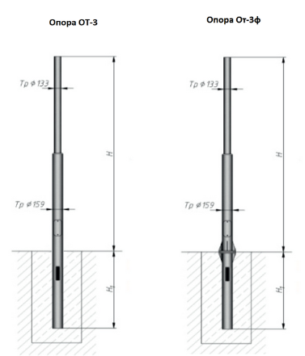
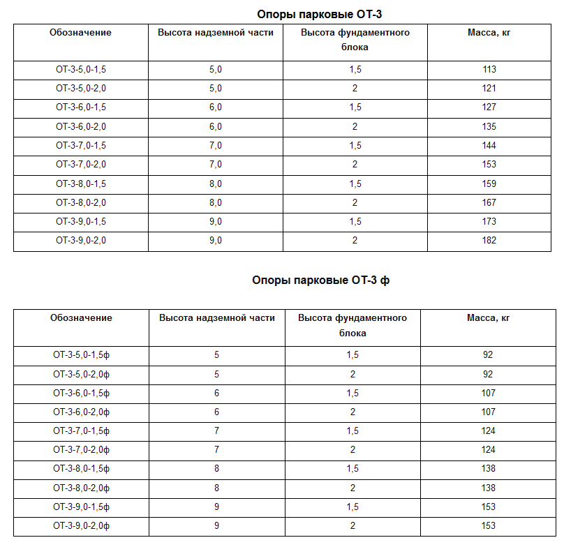

Опоры ОТ-3 предназначены для освещения дворовых территорий, автозаправок, освещения торговых комплексов и множества открытых территорий: магазинов, детских садов торговых центров и развязок. Опоры имеют два лючка (снизу) для траншейного подвода кабеля и сверху над землей (монтажный).
Данные опоры предназначены только для «траншейного» нижнего подвода кабеля, подводка кабеля воздушным способом недопустима.
Габаритные размеры:
Рабочая высота опоры (размер надземной части) – от 5,0 до 9,0 м;
Высота подземной части (фундаментного блока) – от 1,5 до 2,0 м;
Материал изготовления:
Опора изготавливается из электросварной прямо-шовной трубы ГОСТ 10704-91.
Антикоррозийное покрытие:
Лакокрасочное покрытие, порошковая окраска, либо антикоррозийная защита методом горячего оцинкования ГОСТ 9.307-89.
Условное обозначение изделия:
ОТ - опора трубчатая;
3 - номер типоразмера;
5,0 - 9,0 - высота над поверхностью земли, в м;
1,5 - 2,0 - глубина установки (фундаментного блока в землю;
